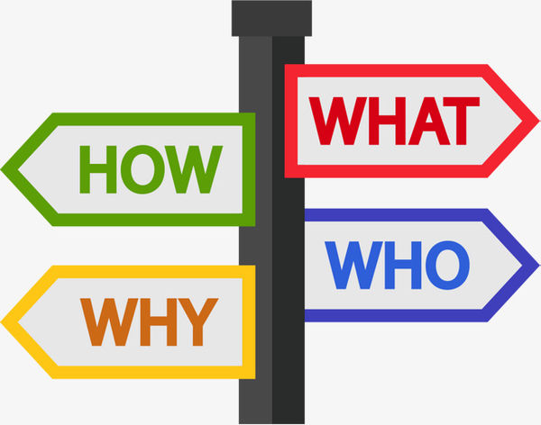
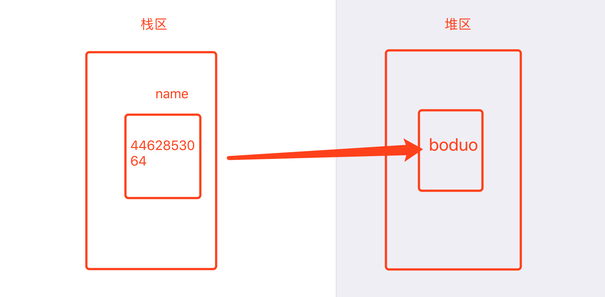

首先我们来谈谈学习方法。学习方法千千万，想找到适合自己的，真的是难上加难。这里我推荐一个我在学习python时用的一个方法3w1h，所谓3w1h就是what、why、where、how。我们在学习每个知识点时候，我们都可以问自己4个问题：what? why? where? how?
在学习每个知识点的时候，如果你都能知道：学的是什么？为什么要学这个知识点？在哪里用这个知识点？怎么用这个知识点？那么你可以为师矣。

这里有两个小问题：
维基百科定义
计算机程序设计（英语：Computer programming），或称程序设计（programming），是给出解决特定问题程序的过程，软件开发过程中的重要步骤。程序设计往往以某种程序设计语言为工具，给出这种语言下的程序。程序设计过程应包括分析、设计、编码、测试、调试等不同阶段。
编程语言（英语：programming language），是用来定义计算机程序的形式语言。它是一种被标准化的交流技巧，用来向计算机发出指令。一种计算机语言让程序员能够准确地定义计算机所需要使用的数据，并精确地定义在不同情况下所应当采取的行动。
编程语言的发展历程也是编程语言从低级语言到高级语言的发展历程：
机器语言(01代码指令)---> 汇编语言(助记词 MOV CMP CF)---> 高级语言(java 、C、python)
这里各种编程语言的定义我就不 多加赘述了，大家google或者百度都能查到。
对比：
我们要学习的python就是高级语言
高级语言的执行方式
1.编译型：类似于百度翻译，执行效率高
2.解释型：类似于同声传译，开发效率高 （python: 后出现的能使用前出现的(资源)，反过来不行）
Python的创始人为吉多·范罗苏姆。1989年的圣诞节期间，吉多·范罗苏姆为了在阿姆斯特丹打发时间，决心开发一个新的脚本解释程序，作为ABC语言的一种继承。之所以选中Python作为程序的名字，是因为他是BBC电视剧——蒙提·派森的飞行马戏团的爱好者。ABC是由吉多参加设计的一种教学语言。就吉多本人看来，ABC这种语言非常优美和强大，是专门为非专业程序员设计的。但是ABC语言并没有成功，究其原因，吉多认为是非开放造成的。吉多决心在Python中避免这一错误，并获取了非常好的效果，完美结合了C和其他一些语言。就这样，Python在吉多手中诞生了。实际上，第一个实现是在Mac计算机上。可以说，Python是从ABC发展起来，主要受到了Modula-3（另一种相当优美且强大的语言，为小型团体所设计的）的影响。并且结合了Unix shell和C的习惯。当前吉多仍然是Python的主要开发者，决定整个Python语言的发展方向。Python社群经常称呼他是终身仁慈独裁者（BDFL）。
Python 2.0于2000年10月16日发布，增加了实现完整的垃圾回收，并且支持Unicode。同时，整个开发过程更加透明，社群对开发进度的影响逐渐扩大。
Python 3.0于2008年12月3日发布，此版不完全兼容之前的Python源代码。不过，很多新特性后来也被移植到旧的Python 2.6/2.7版本。
Python是完全面向对象的语言。函数、模块、数字、字符串都是对象。并且完全支持继承、重载、派生、多重继承，有益于增强源代码的复用性。Python支持重载运算符，因此Python也支持泛型设计。相对于Lisp这种传统的函数式编程语言，Python对函数式编程只提供了有限的支持。有两个标准库（functools, itertools）提供了与Haskell和Standard ML中类似的函数式程序设计工具。虽然Python可能被粗略地分类为“脚本语言”，但实际上一些大规模软件开发计划例如Zope、Mnet及BitTorrent，Google也广泛地使用它。Python的支持者较喜欢称它为一种高端动态编程语言，原因是“脚本语言”泛指仅作简单程序设计任务的语言，如shell script、VBScript等只能处理简单任务的编程语言，并不能与Python相提并论。Python本身被设计为可扩展的。并非所有的特性和功能都集成到语言核心。Python提供了丰富的API和工具，以便程序员能够轻松地使用C、C++、Cython来编写扩展模块。Python编译器本身也可以被集成到其它需要脚本语言的程序内。因此，有很多人把Python作为一种“胶水语言”使用。使用Python将其他语言编写的程序进行集成和封装。在Google内部的很多项目，例如Google应用服务引擎使用C++编写性能要求极高的部分，然后用Python或Java/Go调用相应的模块。《Python技术手册》的作者马特利（Alex Martelli）说：“这很难讲，不过，2004年，Python已在Google内部使用，Google召募许多Python高手，但在这之前就已决定使用Python。他们的目的是尽量使用Python，在不得已时改用C++；在操控硬件的场合使用C++，在快速开发时候使用Python。”
Python的设计哲学是“优雅”、“明确”、“简单”。Python开发者的哲学是“用一种方法，最好是只有一种方法来做一件事”，也因此它和拥有明显个人风格的其他语言很不一样。在设计Python语言时，如果面临多种选择，Python开发者一般会拒绝花俏的语法，而选择明确没有或者很少有歧义的语法。这些准则被称为“Python格言”。在Python解释器内运行import this可以获得完整的列表。
>>> import this
The Zen of Python
by Tim Peters
Beautiful is better than ugly.
Explicit is better than implicit.
Simple is better than complex.
Complex is better than complicated.
Flat is better than nested.
Sparse is better than dense.
Readability counts.
Special cases aren't special enough to break the rules.
Although practicality beats purity.
Errors should never pass silently.
Unless explicitly silenced.
In the face of ambiguity, refuse the temptation to guess.
There should be one-- and preferably only one --obvious way to do it.
Although that way may not be obvious at first unless you're Dutch.
Now is better than never.
Although never is often better than *right* now.
If the implementation is hard to explain, it's a bad idea.
If the implementation is easy to explain, it may be a good idea.
Namespaces are one honking great idea -- let's do more of those!1.实时交互：提前进入python解释器环境
2.文件交互：将文件交给python解释器执行（效率高）
我们使用3w1h来学习一下变量这个概念：
1. what: 可变的 状态(量是用来描述事物的某种状态)
2. why: 如何用代码来描述事物的某种（可变化的）状态
3. where: ...
4. how：
- 如何定义变量：
变量名 = 变量值
name = 'boduo' 在堆区开辟空间存放变量值，在栈区开辟名为变量名的空间存放堆区变量值那个区域的地址
name = 'cangjin' 重新赋值，重新开辟空间存放变量值，跟原本的变量名进行绑定，原来变量名name的值就为cangjin

- 如何使用变量：
变量名 -- 没有被变量名绑定的变量值就会被系统回收
1. 变量值：变量名
2. 变量地址：id(变量名)
3. 变量的类型：type(变量名)
注：新建值，系统就会开辟空间存放该值，但存在python的优化机制，当变量值简单时，python会沿用之前的变量值
n1 = 'michael dong'
n2 = 'michael dong
正常情况(一个值开辟一个空间存放)：id(n1) != id(n2)
n1 = 'dong'
n2 = 'dong'
优化情况(沿用之前空间值)：id(n1) == id(n2)
思考
n1 = n2 = 'michael dong' <=> n1 = 'michael dong' n2 = n1
id(n1) == id(n2)
1. 可以由数字、字母、下划线组合
2. 不能以数字开头
3. 不能与系统关键字保留字重名
4. 见名知意，建议使用_连接语法（驼峰 objecName objectName | _连接 object_name），一般_开头或结尾都有特殊含义
变量名 = input("文本提示")
注：回车后，系统在控制台等待用户输入具体的 变量值# 需要从键盘上录入三个变量值
name = input('请输入姓名：')
gender = input("请输入性别：")
age = input("""请输入年龄：""")
# 按照指定的多行文本格式输出
print("""------- name: %s -------
name：%s
gender：%s
age：%s
---------- end ----------""" % (name, name, gender, age))
# 了解：
# %s本质上是为字符串站位，但是可以为所以类型数据进行站位
# %d是数字类型占位符，只能给数字数据站位，否则报错python中数据类型有：整数、浮点数、字符串、布尔型、列表、字典等等,具体使用方法，后续我们会一个个细讲
## 数据类型
int 10
float 10.0
str 'python'
bool True
list [1,2,3]
dict {'key1':'value1','key2':'value2'}
## 运算符
1. + - * / % ** // 数学运算符
2. > < >= <= == != 比较运算符
3. and or not 逻辑运算符